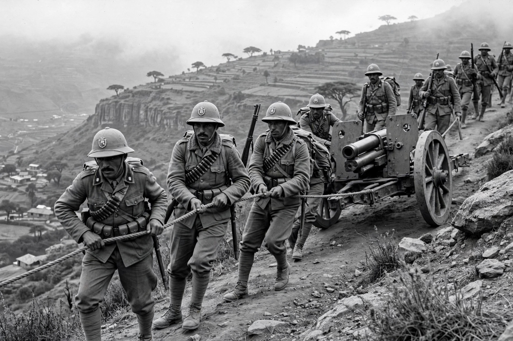

The Second Italo-Ethiopian War, also called the Second Italo-Abyssinian War, was a war of aggression fought from 3 October 1935 to 19 February 1937 between Fascist Italy and the Ethiopian Empire. Led by Benito Mussolini, Italy invaded Ethiopia to avenge the defeat at Adwa in 1896 and to build an Italian colonial empire in East Africa. The invasion exposed the weakness of the League of Nations and its failure to protect a member state, and it is often seen as a prelude to the Second World War.
| Second Italo-Ethiopian War | |
|---|---|
 Italian soldiers advancing with artillery in the Ethiopian highlands, 1935 Italian troops in Ethiopia, 1935 | |
| Date | 3 October 1935 – 19 February 1937 |
| Location | Ethiopia (Abyssinia) |
| Result | Italian victory; occupation of Ethiopia; formation of Italian East Africa |
| Belligerents | Italy vs. Ethiopian Empire |
| Notable commanders | Emilio De Bono, Pietro Badoglio, Rodolfo Graziani vs. Haile Selassie, Ras Imru |
Mussolini sought to expand Italy's East African colonies of Eritrea and Italian Somaliland into a contiguous empire, partly to repay the humiliation of the First Italo-Ethiopian War. The December 1934 Walwal incident — a clash between Italian and Ethiopian forces at an oasis in the disputed Ogaden — provided the pretext for mobilisation. Ethiopia, under Emperor Haile Selassie, appealed to the League of Nations, which proved unable to restrain Italy beyond limited economic sanctions that excluded oil and never took full effect.
On 3 October 1935 Italian forces crossed the Eritrean frontier. After slow progress under General De Bono, Mussolini replaced him with Pietro Badoglio, whose northern army advanced in 1936 and annihilated the Ethiopian army at the Battle of Maychew (31 March 1936). Italian forces used mustard gas against both soldiers and civilians in violation of international treaties, bombed Red Cross units, and executed prisoners and resisters. Addis Ababa fell on 5 May 1936; Haile Selassie went into exile in Britain, delivering his celebrated appeal to the League of Nations in Geneva on 30 June 1936. Marshal Graziani's southern column advanced from Somaliland and, after becoming Viceroy, crushed the February 1937 uprising in Addis Ababa with mass reprisals.
Italy proclaimed the colony of Africa Orientale Italiana, with Victor Emmanuel III as "King of Italy and Emperor of Ethiopia." Ethiopian resistance (arbegnoch, "patriots") continued a guerrilla war throughout the occupation. In 1941, during the East African campaign of the Second World War, British and Commonwealth forces together with Ethiopian patriots liberated the country, and Haile Selassie returned to Addis Ababa on 5 May 1941.
Categories: Wars involving Ethiopia · Wars involving Italy · 1930s conflicts